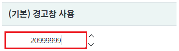
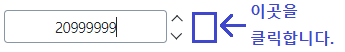
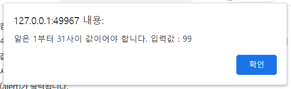
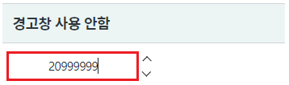
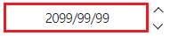
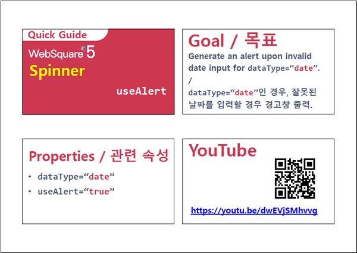

컴포넌트의 속성 useAlert 설정 예제입니다. 속성 useAlert은 속성 dataType이 "date"로 지정되고, 사용자가 입력 영역(input)에 직접 값을 입력했을 때 동작하는 기능입니다. 사용자가 입력한 값이 유효한 날짜가 아닌 경우 경고 포커스가 벗어난는 시점에 메시지(alert)가 출력됩니다.
(기본) 경고창 사용
경고창 사용 안함
영역 [(기본) 경고창 사용]의 InputCalendar에 아래의 값을 입력합니다.
입력값 : 20999999
[브라우저(Chrome) 실행 예시]

키 Tab을 눌러 포커스를 제거하거나 마우스로 빈 여백을 클릭합니다.
[브라우저(Chrome) 실행 예시]

유효하지 않은 입력값에 대한 안내 메시지가 출력됩니다.
[브라우저(Chrome) 실행 예시 - alert]

영역 [경고창 사용 안함]의 InputCalendar에 아래의 값을 입력합니다.
입력값 : 20999999
[브라우저(Chrome) 실행 예시]

키 Tab을 눌러 포커스를 제거하거나 마우스로 빈 여백을 클릭합니다.
[브라우저(Chrome) 실행 예시]
입력값에 포맷이 적용되어 출력됩니다.
출력 예시) 2099/99/99
[브라우저(Chrome) 실행 예시 - alert]

STEP1. 속성을 지정합니다.
[필수] dataType="date" //데이터 타입을 날짜형으로 지정합니다.
[필수] useAlert="false" //유효성 안내 alert을 사용하지 않습니다.
[소스 코드 예시]
<!-- spinner의 소스 본문 예시 --> <w2:spinner dataType="date" useAlert="false" id="spi_exam2"> </w2:spinner>
dataType
useAlert
[웹스퀘어5 SP5 개발 가이드] Spinner
링크 : https://docs1.inswave.com/sp5_user_guide/8df43d1f59fab704#42ddf8532ad343b6
[웹스퀘어5 SP5 개발 가이드] Spinner 잘못된 날짜를 입력할 경우 경고창 출력 (useAlert)
링크 : https://docs1.inswave.com/sp5_user_guide/8df43d1f59fab704#03bfc6822e801d6e
Spinner 잘못된 날짜를 입력할 경우 경고창 출력 (useAlert)
링크 : https://youtu.be/dwEVjSMhvvg
